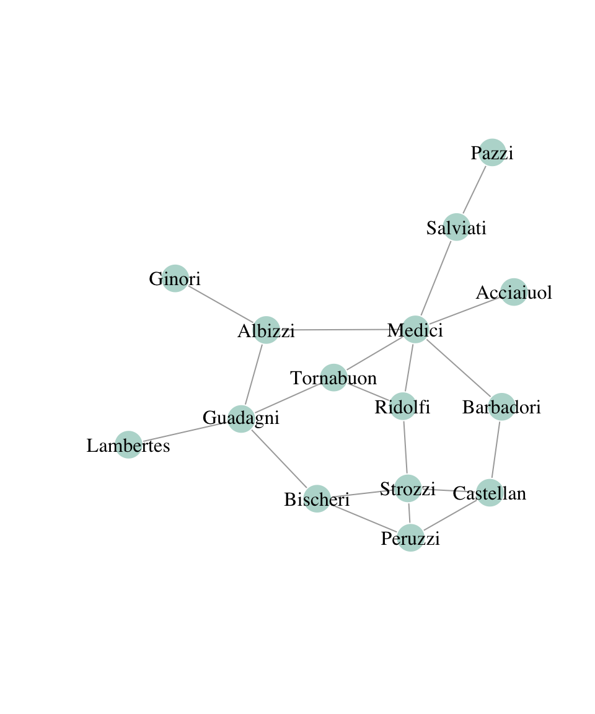
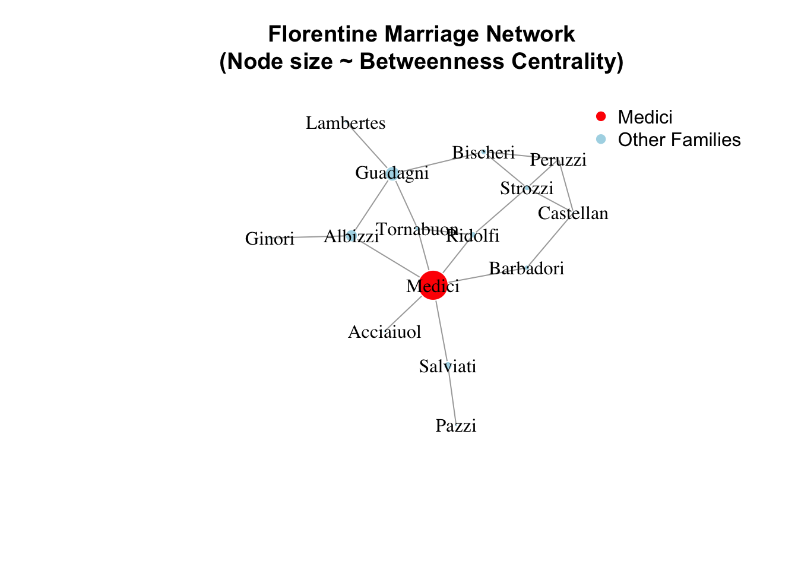
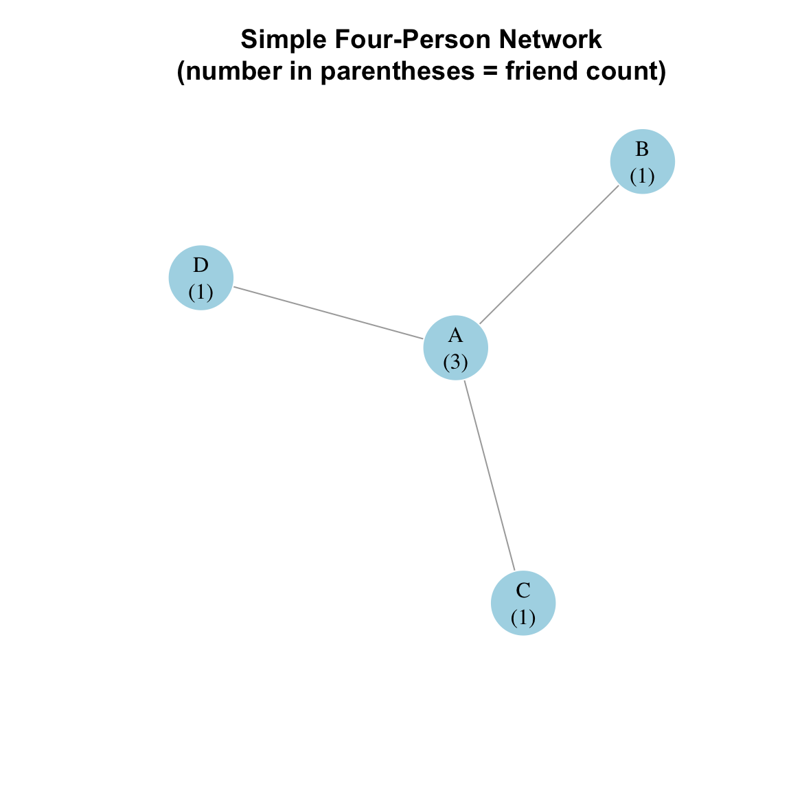

Vignettes with code and figures to use in modeling social behavior.
These vignettes depend on some libraries:
# Load dependencies.library(tibble)library(dplyr)
Attaching package: 'dplyr'
The following objects are masked from 'package:stats':
filter, lag
The following objects are masked from 'package:base':
intersect, setdiff, setequal, union
library(ggplot2)library(ggforce)library(igraph)
Attaching package: 'igraph'
The following objects are masked from 'package:dplyr':
as_data_frame, groups, union
The following object is masked from 'package:tibble':
as_data_frame
The following objects are masked from 'package:stats':
decompose, spectrum
The following object is masked from 'package:base':
union
library(igraphdata)library(forcats)library(netrankr)library(magrittr)library(knitr)knitr::opts_chunk$set(echo =TRUE, warning =FALSE, message =FALSE)# Network illustration and igraph settings.NETWORK_COLOR ="#69b3a2"NODE_COLOR =adjustcolor(NETWORK_COLOR, alpha.f =0.5)igraph_options(vertex.frame.color ="white", vertex.color = NODE_COLOR, vertex.label.color ="black")# Source the agent-based modeling code from socmod.R in root ProblemSets# directory. Since this is in the CSS4S/notes directory for the course website# I need to use a different path. Use `socmod_path` for the problem set.socmod_path <-"~/workspace/CSS4S-ProblemSets/socmod.R"# <-- comment this out for your problem set # socmod_path <- "../socmod.R" ### <-- Use this one for your Problem Setsource(socmod_path)
Attaching package: 'assertthat'
The following object is masked from 'package:tibble':
has_name
Attaching package: 'purrr'
The following object is masked from 'package:magrittr':
set_names
The following objects are masked from 'package:igraph':
compose, simplify
library(netrankr) # Has Florentine network data we load next line.data("florentine_m")# Delete Pucci family (isolated)florentine_m <-delete_vertices(florentine_m, which(degree(florentine_m) ==0))# plot the graphset.seed(111)plot(florentine_m)

Figure 1: Florentine marriage network where edges represent marriages between families (node labels).
Highlighting betweenness of Medicis:
# Load necessary librarieslibrary(igraph)library(netrankr)# Load the Florentine family marriage networkdata("florentine_m")# Remove the Pucci family (isolated node)florentine_m <-delete_vertices(florentine_m, which(degree(florentine_m) ==0))# Calculate betweenness centrality for all familiesbetweenness_values <-betweenness(florentine_m, directed =FALSE)# Print betweenness centrality, sorted by importancesorted_betweenness <-sort(betweenness_values, decreasing =TRUE)print(sorted_betweenness)
# Highlight the Medici familyV(florentine_m)$color <-ifelse(V(florentine_m)$name =="Medici", "red", "lightblue")# Visualize the network with node size proportional to betweenness centralityplot( florentine_m,vertex.size =scale(betweenness_values, center =FALSE, scale =max(betweenness_values)) *20,vertex.label.color ="black",vertex.color =V(florentine_m)$color,main ="Florentine Marriage Network\n(Node size ~ Betweenness Centrality)")# Highlight the Medici family's central role in the networklegend("topright", legend =c("Medici", "Other Families"),col =c("red", "lightblue"), pch =19, bty ="n")

Effect of rewiring on Florentine marriage
Now let’s use the rewire function to randomly re-wire each edge with probability of 0.2.
Note that to capture even more complexity and realism in social network models, exponential family and random graph models are the next step: they can be written as mixtures of stochastic block models (Eldan and Gross 2018).
The friendship paradox
A Simple Four-Person Network
Let’s create a simple network with just 4 people where: - Person A has 3 friends (B, C, and D) - Person B has 1 friend (A) - Person C has 1 friend (A) - Person D has 1 friend (A)
# Calculate overall average number of friendsavg_friends <-mean(degrees)# Calculate friends' average friends for each personfriends_avg_friends <-sapply(V(g), function(x) { neighbors <-neighbors(g, x)if(length(neighbors) >0) {mean(degree(g)[neighbors]) } else {0 }})# Create summary dataframesummary_df <-data.frame(Person = LETTERS[1:4],Own_Friends = degrees,Friends_Avg_Friends =round(friends_avg_friends, 2))# Display resultskable(summary_df,col.names =c("Person", "Number of Friends", "Average Friends of Friends"),caption ="Comparison of Friend Counts")
Comparison of Friend Counts
Person
Number of Friends
Average Friends of Friends
A
A
3
1
B
B
1
3
C
C
1
3
D
D
1
3
cat("\nOverall Statistics:\n")
Overall Statistics:
cat("Average number of friends per person:", round(avg_friends, 2), "\n")
Average number of friends per person: 1.5
cat("Average of friends' friends:", round(mean(friends_avg_friends[degrees >0]), 2))
Average of friends' friends: 2.5
Visualize the Network
# Create a layout for the graphlayout <-layout_with_fr(g)# Plot the networkplot(g,layout = layout,vertex.size =30,vertex.label =paste0(V(g)$name, "\n(", degrees, ")"),vertex.color ="lightblue",main ="Simple Four-Person Network\n(number in parentheses = friend count)")

Explanation
This simple example clearly shows the friendship paradox:
The average number of friends per person is 1.5 (calculated as (3 + 1 + 1 + 1) ÷ 4)
But looking at friends’ friends:
A’s friends (B, C, D) each have 1 friend
B’s friends (A) have 3 friends
C’s friends (A) have 3 friends
D’s friends (A) have 3 friends
The average of friends’ friends is 2, which is higher than the overall average of 1.5
This demonstrates how even in a very simple network, people’s friends tend to have more friends than average.
Time series
See below for some examples of how to plot time series in R. Base R comes with plotting tools that work well for quick plots, and can be customized to make publication-ready plots. However, it is easier to make more complex plots with the tidyverse library ggplot2.
For the examples to follow, use the following example output data from the example “random switching” model with some initial conditions to define (\(N\) and \(A_0 = A_{t=0}\), and one parameter, the probability an individual swtiches from one behavior to the other (switch_prob), which is identical for each behavior at each time step.
Eldan, Ronen, and Renan Gross. 2018. “Exponential random graphs behave like mixtures of stochastic block models.”Annals of Applied Probability 28 (6): 3698–3735. https://doi.org/10.1214/18-AAP1402.